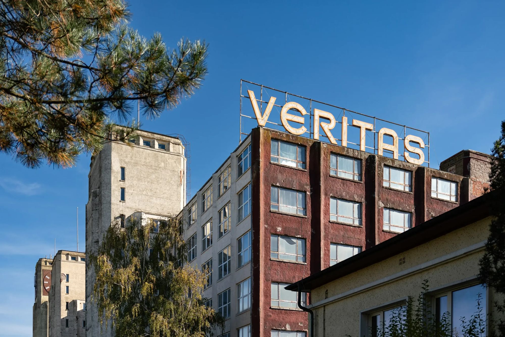
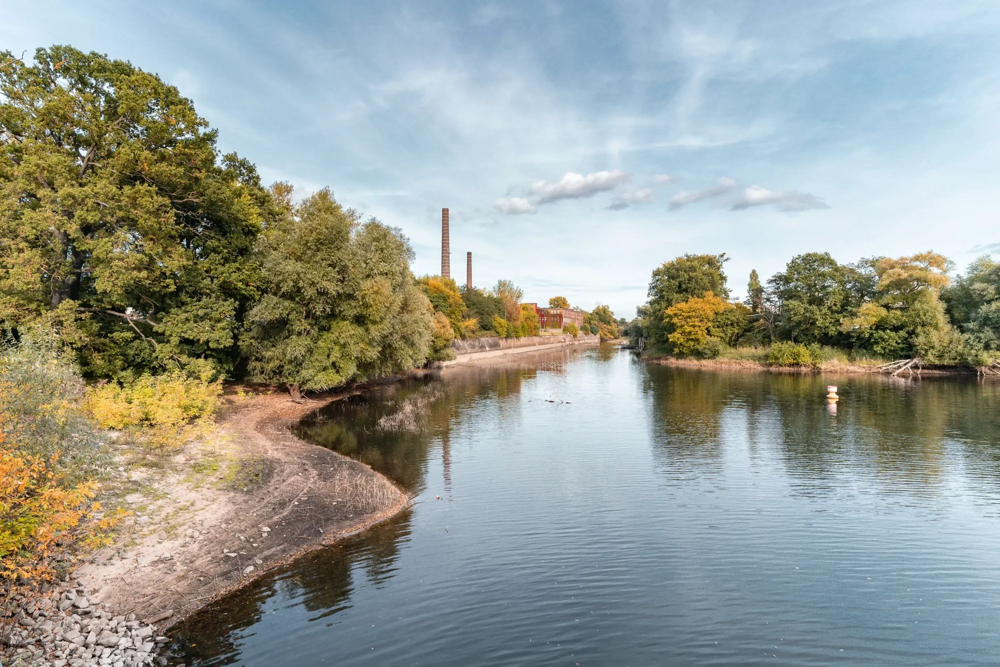

15-Minute City
Imagine living in a place where everything you need is just a 15-minute walk or bike ride away: work, play, and everything in between.




An urban center with self-sustaining, future-forward and economic potential paired with green environmental standards which balances the need for a harmony between work, life, leisure and innovation.
Veritas
From 2025 Veritas produces again: but this time, the future.
is coming back!
Narrative
VERITAS is not just a location. It’s a way of living and working. Of thinking. Of acting. Here, we create spaces that invite people to challenge the way we live and work. We host, house, and hone creative thinkers from diverse disciplines: the arts, sciences, technology, and business.
In doing so, we foster transformative ideas for urban living and working in the future. Together, we don’t just plan these spaces, we create them. Test them. Live and work in them. In real life and real time. So communities worldwide can adopt them.
Our spirit was born in our hometown, Wittenberge. Inspired by the town’s legacy of innovation and making things that last. We carry this legacy forward. But in times of rapid change, we dare to be slow. Because we believe true progress comes from slowing down.
That’s the VERITAS way: forever evolving.
Vision
At VERITAS new ideas are tested on site, in real buildings, with the people who live and work in them. We keep what works and change the rest. Other cities can then take it up.
Mission
VERITAS is a full-scale test ground. Here you can try out new answers for mobility, food, energy and the way a place is run, and see how they hold up in daily life. We provide the spaces, the means and the support.
Here are a few ways we’re making that mission real:
Imagine living in a place where everything you need is just a 15-minute walk or bike ride away: work, play, and everything in between.
We’re big on minimizing waste. In the Urbanotop, residents and visitors reuse, repurpose, and share resources and ideas, making sustainability a way of life.
Renewable energy and smart water systems power the Urbanotop, showing how cities of the future can be resilient and self-sufficient.
But that’s not all. The Urbanotop is also a community. Like the former Veritas Park, this modern city will build upon global connections: people from all walks of life who are eager to exchange ideas and make a difference. Grounded in local knowledge but with a global outlook, VERITAS will set the blueprint for sustainable cities across the world.
Story
It all started with Chaussee36, a sustainable renovation project that transformed a former Prussian officers’ residence into a creative hub for experimentation and innovation. Each of the 100 rooms was individually restored in a sustainable way, preserving and ‘upcycling’ as many original features as possible. Chaussee36 is more than just a building: it’s a symbol of how residents, workers, and innovators can blend the past with the future, turning history into something fresh, vibrant, and full of potential.
Team
The driving force behind VERITAS is its initiator, whose vision was simple: bring people together and use their creativity to create something extraordinary. Something that might change the course of action and our current paradigm. Inspired by Wittenberge’s legacy of craftsmanship and its history of making things that last, he set out to create a space where bold ideas could not only exist but thrive.
His belief that the world needs to balance art and commerce, nature and technology first led him to develop the Chaussee36 project, which acts as the prototype for the Urbanotop that VERITAS will become. VERITAS is a testament to his early success and the enduring power of that vision: a place where the future is being built, brick by brick, idea by idea.
Initiator
Chief architect
Head of research
Spokesperson
Property management
Property management


Whether you’re a creator, thinker, or dreamer, or doer, VERITAS is for you, always open for new bold ideas. So step into the Urbanotop and make your mark, because the future doesn’t just happen. We make it happen. Together.